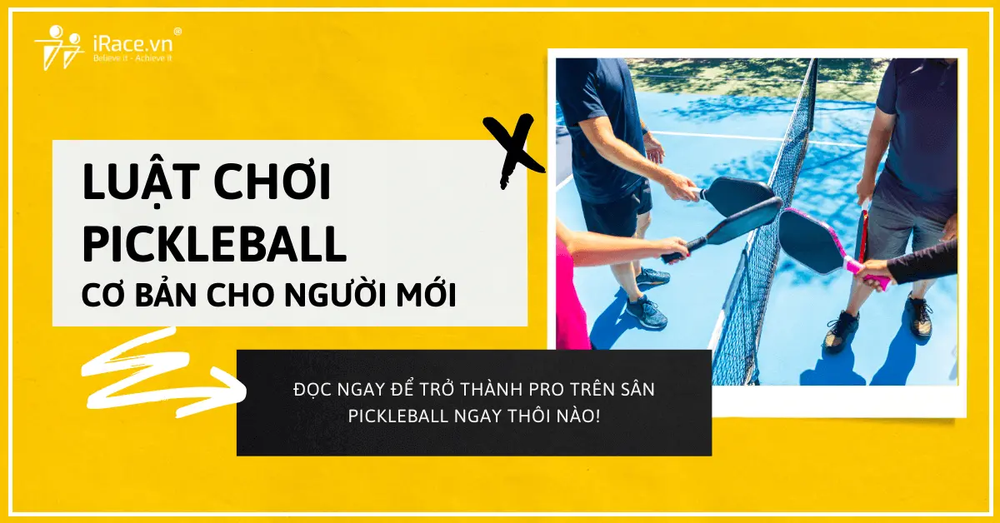
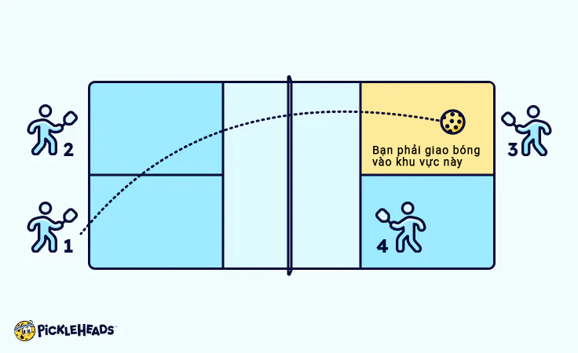
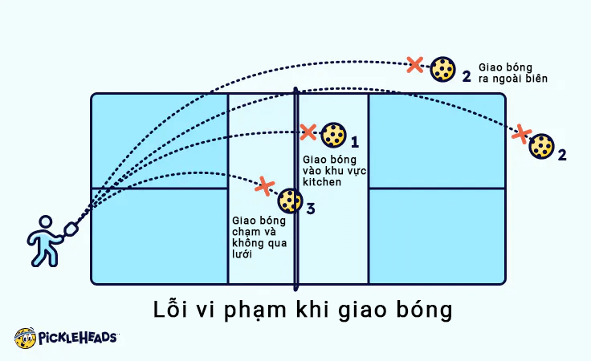
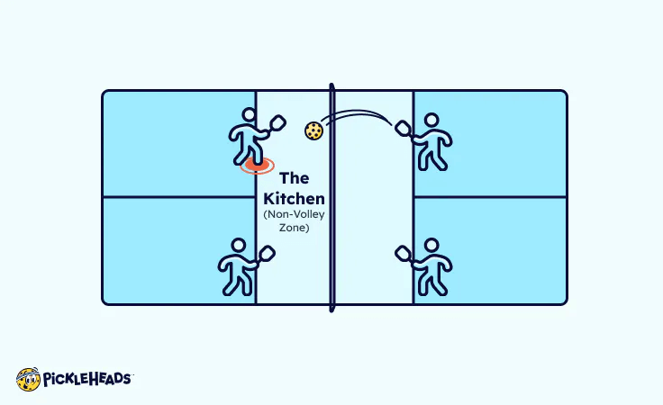
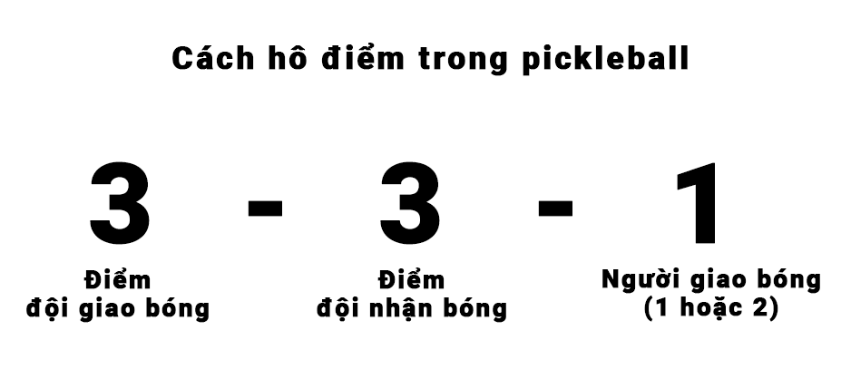
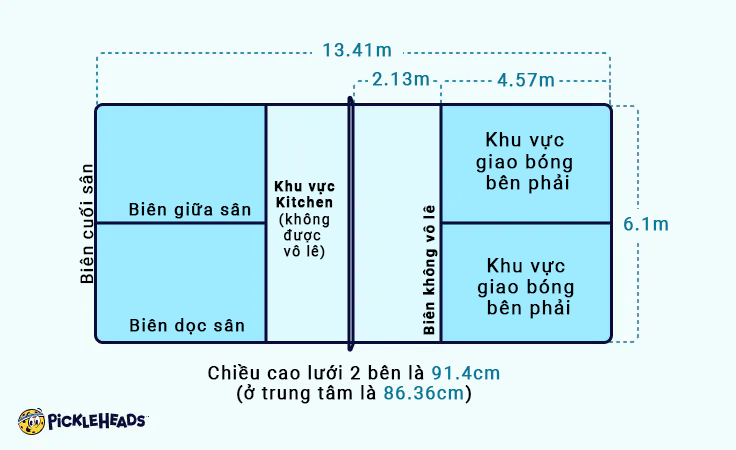
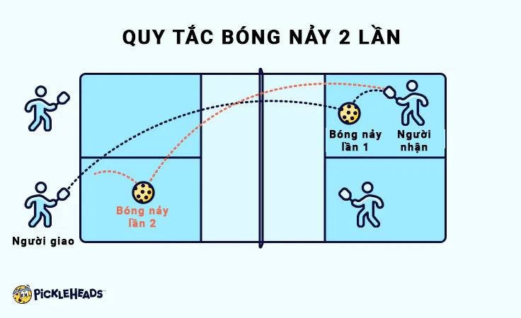
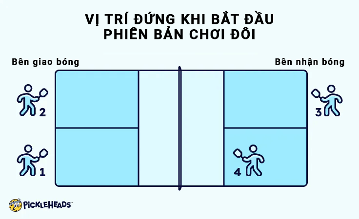
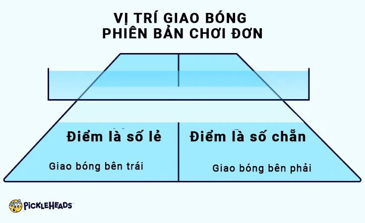

7 luật chơi môn pickleball cơ bản mà bạn cần nắm rõ
Bạn thấy người người nhà nhà đang chơi pickleball và bạn cũng muốn thử bộ môn siêu HOT này nhưng lại không biết luật chơi môn pickleball ra sao? Vậy thì bài viết này chính là thứ mà bạn cần đây rồi.

Cho dù bạn là người mới bắt đầu hay là người chơi dày dạn kinh nghiệm muốn làm mới lại cách chơi pickleball , bài viết này đều sẽ cho bạn một thông tin chi tiết. Thực hiện theo 7 quy tắc đơn giản này và bạn sẽ chơi được ngay thôi.
Để bắt đầu, tất cả những gì bạn cần là một cây vợt pickleball chất lượng, bóng pickleball để chơi và một sân pickleball gần bạn. Cách tốt nhất để học luật chơi cơ bản là tham gia một lớp học riêng dành cho người mới bắt đầu. Tại đó họ thường cung cấp thiết bị nếu bạn chưa sẵn sàng đầu tư vào thiết bị.
7 luật chơi môn pickleball mà bạn nên biết gồm có
Pickleball được chơi trên sân có kích thước bằng sân cầu lông với chiều cao lưới là 91.44cm ở đường biên và 86.36cm ở giữa. Mỗi đầu sân có một khu vực rộng 213.36cm được gọi là khu vực cấm vô lê (hoặc ‘kitchen’) nơi người chơi không được phép đánh vô lê (một cú đánh được thực hiện trên không).
Môn thể thao này thường được chơi ở dạng “đôi” (mỗi đội có hai người chơi). Trong phạm vi bài viết này sẽ hướng dẫn chi tiết cách chơi pickleball đôi.
Rồi, bầy giờ chúng ta hãy cùng tìm hiểu các luật chơi môn pickleball thôi nào
Luật chơi môn pickleball số 1: Bắt đầu bằng một cú giao bóng
Trong môn pickleball mỗi khi bắt đầu thì sẽ bắt đầu bằng một cú giao bóng. Người chơi ở bên phải sân của họ luôn bắt đầu giao bóng. Bạn giao bóng theo đường chéo đến đối thủ của mình:

Người giao bóng có thể đánh bóng sau khi bóng nảy hoặc bật ra khỏi không khí (một “cú giao bóng vô lê”) và cú giao bóng của họ phải vượt qua kitchen (bao gồm cả đường biên).
Khi thực hiện cú giao bóng vô lê, phải đánh bóng bằng cú thuận tay dưới hoặc cú trái tay với điểm tiếp xúc dưới thắt lưng. Vợt của bạn cũng phải di chuyển theo một vòng cung hướng lên trên khi bạn đánh bóng.
Luật chơi môn pickleball số 2: Bóng phải nảy 1 lần mỗi bên trước khi đánh trả
Trước khi bất kỳ cầu thủ nào có thể đánh một cú đánh ra vô lê, bóng phải nảy một lần ở mỗi bên (được gọi là “luật hai lần nảy”).
Vì vậy, nếu đối tác của bạn đang giao bóng và bạn đứng ở khu vực kitchen, bạn đang ở trong một vị trí nguy hiểm. Tại sao? Điều này là do đối thủ có thể đánh một cú đánh thẳng vào bạn. Nếu bạn đánh trả bằng một cú vô lê, thì đó được coi là vi phạm và bạn sẽ mất điểm vì bạn đã không để bóng nảy trước ở phía mình.
Nếu không có luật này, đội giao bóng có thể dễ dàng lao vào lưới và giành được lợi thế không công bằng mọi lúc.
Luật chơi môn pickleball số 3: Việc đánh trả bóng sẽ liên tục cho đến khi 1 bên phạm lỗi
Sau khi giao bóng, việc đánh trả bóng sẽ tiếp tục cho đến khi một pha giao bóng giành chiến thắng hoặc có người đánh một cú đánh quyết định hoặc một “lỗi” được thực hiện. Một lỗi sẽ kết thúc pha giao bóng.

Trong pickleball, có bốn loại lỗi cơ bản gồm:
- Cú giao bóng nằm ngoài khu vực giao bóng bắt buộc hoặc ngoài khu vực kitchen (bao gồm cả đường biên).
- Quả bóng nằm ngoài ranh giới (phía sau đường biên cuối sân hoặc ngoài đường biên dọc).
- Quả bóng chạm lưới và rơi về phía người giao bóng.
- Quả bóng nảy hai lần ở một bên trước khi người chơi có thể trả bóng.
Luật chơi môn pickleball số 4: Bạn không thể vô lê trong khu vực kitchen
Khu vực kitchen ở mỗi bên lưới đánh dấu khu vực không vô lê Như tên gọi, bạn không bao giờ có thể vô lê khi bất kỳ bộ phận nào trên cơ thể bạn ở trong khu vực kitchen (hoặc thậm chí trên đường kitchen). Bạn cũng không thể để đà đánh của mình đưa bạn vào kitchen sau khi vô lê.

Điều đó có nghĩ, bạn có thể đánh bóng nếu nó nảy trong khu vực kitchen—nhưng không phải trên không trung. Nếu đối thủ của bạn đánh một cú đánh ngắn rơi vào khu vực kitchen, bạn có thể vào và chơi từ khu vực kitchen.
Luật chơi môn pickleball số 5: bạn chỉ thắng điểm khi giao bóng
Trong cách tính điểm pickleball truyền thống, bạn chỉ thắng điểm khi giao bóng và bạn tiếp tục giao bóng cho đến khi thua một pha giao bóng. Sau khi thắng mỗi điểm khi giao bóng, bạn đổi bên (trái và phải) với bạn chơi và giao bóng cho đối thủ khác.
Khi đội của bạn mất một điểm, đồng đội của bạn bắt đầu giao bóng theo trình tự được mô tả ở trên cho đến khi đội của bạn (đội giao bóng) mất một điểm nữa. Khi điều đó xảy ra, quyền giao bóng sẽ chuyển sang cho đội kia.
Luật chơi môn pickleball số 6: điểm số chính xác phải được hô trước khi giao bóng
Trong cách tính điểm pickleball, bạn sẽ nghe người chơi thông báo ba số, như “0-0-2”. Sau đây là ý nghĩa của từng số:

- Số đầu tiên: điểm của đội giao bóng
- Số thứ hai: điểm của đội tiếp bóng
- Số thứ ba :cầu thủ nào của đội đang giao bóng, người giao bóng đầu tiên (1) hay người giao bóng thứ hai (2)
Ví dụ ván đấu đang hòa 3-3. Nếu bạn bắt đầu giao bóng, bạn sẽ hô to “3-3-1”, để mọi người biết bạn là người chơi đầu tiên trong lượt giao bóng luân phiên.
Nếu bạn thua pha giao bóng, bóng sẽ không chuyển sang cho đối thủ của bạn. Nó đến tay đồng đội của bạn, người này cũng sẽ hô to “3-3-2”.
Nếu đối tác của bạn thua giao bóng, một “side out” sẽ xảy ra. Điều này có nghĩa là họ đã thua hai lần giao bóng và bây giờ đến lượt đối thủ của họ giao bóng. Sau đó, đối thủ của bạn cũng sẽ hô to “3-3-1” trước khi bắt đầu giao bóng.
Có một ngoại lệ cho quy tắc này: người chơi đầu tiên giao bóng khi bắt đầu một ván đấu mới sẽ hô “0-0-2”. Lý do là vì đội bắt đầu chỉ được giao bóng một lần vì họ có lợi thế là có thể ghi điểm trước khi bắt đầu trận đấu.
Luật chơi môn pickleball số 7: đội đầu tiên đạt 11 điểm sẽ thắng—nhưng bạn phải thắng cách biệt 2 điểm
Theo tất cả các luật trên, trò chơi sẽ tiếp tục cho đến khi một đội đạt 11 điểm. Tuy nhiên, họ phải thắng cách biệt 2 điểm.
Vì vậy, nếu một trận đấu hòa 10-10, thì điểm tiếp theo sẽ không kết thúc trò chơi. Trò chơi sẽ tiếp tục sau 11-10 cho đến khi một đội có thể thắng cách biệt 2 điểm. Do đó, một số trò chơi có thể tiếp tục trong một thời gian rất dài. Bạn có thể thấy tỷ số cuối cùng là 12-10, 15-13 hoặc thậm chí là 21-19. Đây thường là những ván đấu vui nhất.
Bạn cần gì để có thể chơi pickleball
Trước khi có thể bắt đầu chơi pickleball bạn sẽ cần chuẩn bị một số thứ như là
- Đồ chơi pickleball: vợt, bóng và thậm chí có thể là lưới pickleball (nếu sân khu vực của bạn không có lưới cố định).
- Quần áo pickleball: cho dù đó là một đôi giày pickleball tốt nhất hay một số đôi tất hoàn toàn mới, đầu tư vào quần áo dành riêng cho pickleball có thể giúp bạn chơi tốt hơn.
- Sân pickleball địa phương
- Lưu ý: có rất nhiều vợt kém chất lượng được bày bán, không nên lựa chọn các loại vợt có giá quá rẻ bạn nhé.
Cách thiết lập một sân chơi pickleball tiêu chuẩn
Nếu địa điểm bạn chơi đã có sẵn sân được thiết lập để chơi pickleball thì bạn không cần làm gì cả, chỉ cần đến và chơi, nhưng nếu không có thì bạn sẽ cần phải thiết lập sân như sau:

À, nếu sân của bạn chưa có lưới, bạn sẽ cần lưới di động cho những trường hợp này. Sau khi lắp ráp xong, hãy đặt lưới ở giữa sân như khi chơi quần vợt.
Hãy cùng xem xét kỹ hơn kích thước của sân pickleball dưới đây
Các loại đánh bóng trong pickleball
Chúng ta hãy cùng xem qua một số cú đánh bạn có thể thực hiện trong pickleball:
- Đánh bóng căng (Drives): Những cú đánh mạnh này được đánh ra khỏi đường biên, thường là từ đường biên cuối sân. Chúng được thực hiện bằng cú đánh thuận tay hoặc trái tay.
- Cú đánh thấp (Drop Shots): Được thực hiện ở phía sau sân, những cú đánh này nhằm mục đích đưa bóng vào khu vực kitchen của đối thủ để ngăn họ tấn công.
- Dinks: Giống như cú đánh Drop Shots nhưng được thực hiện gần lưới hơn, những cú đánh chạm bóng này được đánh vào khu vực của đối thủ và giúp ngăn cản đội kia tấn công.
- Vô lê (Volleys): Những cú đánh này được thực hiện trên không trước khi bóng nảy. Chúng chỉ có thể được thực hiện bên ngoài khu vực kitchen.
- Đánh bóng cao (Lobs): Những cú đánh này được thực hiện ở vị trí cao trên không để đẩy đối thủ ra xa khỏi bếp.
- Overheads: Những cú đánh đánh vào phía trên đầu với động tác giao bóng tennis, được sử dụng để tấn công các cú đánh bổng trước khi chúng nảy ra.
Những mẹo chơi pickleball
Cách giao bóng trong pickleball
Theo luật chơi môn pickleball, mỗi đợt giao bóng trong pickleball đều bắt đầu bằng cú giao bóng. Không giống như trong quần vợt, mục đích của cú giao bóng pickleball là đưa bóng vào cuộc chơi. Theo Luật chính thức của USA Pickleball:
- Đối với cú giao bóng vô lê (đánh bóng trước khi bóng nảy), cú giao bóng phải được thực hiện bằng cú đánh dưới tay sao cho bóng tiếp xúc với phần dưới thắt lưng.
- Cánh tay phải di chuyển theo hình cung hướng lên trên và điểm cao nhất của đầu vợt phải nằm dưới cổ tay khi đánh bóng.
- Điểm cao nhất của đầu vợt không được nằm trên cổ tay. Nói cách khác, cú giao bóng pickleball là cú đánh thuận tay hoặc trái tay dưới tay kết thúc bằng động tác hướng lên trên:
Vị trí giao bóng trong pickleball
Trong pickleball đôi, bạn luôn phải giao bóng đến sân giao bóng chéo đối diện. Giao bóng của bạn phải hoàn toàn vượt qua vạch kitchen, và nằm giữa đường biên ngang và đường biên cuối sân để tính điểm. Giao bóng có thể nằm “trên vạch” đối với đường biên cuối sân và đường biên dọc sân, nhưng không được nằm trên vạch kitchen.
Đứng ở đâu khi giao bóng
Bạn phải đứng sau đường biên cuối sân khi giao bóng trong môn pickleball. Chân của bạn không được chạm vào đường biên cuối sân hoặc đường biên dọc trong khi giao bóng.
Bạn nên đứng sau đường biên khi giao bóng cho đến khi thực hiện cú đánh thứ ba. Nếu bạn chạy lên khu vực kitchen sau khi giao bóng, bạn sẽ có nguy cơ vi phạm quy tắc hai lần nảy.
Gợi ý: đội trả bóng có thể đứng theo đội hình “một trên, một dưới” vì quả giao bóng sẽ nảy về phía họ trước. Điều này cho phép họ bắt đầu phát bóng ngay sau khi trả bóng.
Chiến lược giao bóng trong pickleball
Mặc dù mục tiêu của cú giao bóng pickleball là đưa bóng vào cuộc chơi, nhưng bạn có thể tận dụng lợi thế này để ghi điểm. Sau đây là ba chiến lược để cải thiện cú giao bóng pickleball của bạn:
- Giao bóng sâu:Những cú giao bóng ngắn khiến đối thủ của bạn chạy về phía vạch bếp. Bạn muốn giữ họ lại càng lâu càng tốt, vì vậy giao bóng sâu là tốt nhất.
- Đánh vào điểm yếu:Giao bóng về phía yếu hơn của đối thủ (thuận tay hoặc trái tay) có thể khiến họ mắc nhiều lỗi hơn hoặc trả bóng yếu hơn.
- Thêm độ xoáy (nâng cao): Bằng cách thay đổi góc của vợt khi giao bóng, bạn có thể tạo độ xoáy. Độ xoáy có thể khiến đối thủ của bạn mất cảnh giác và gây ra những lỗi không đáng có khi trả bóng.
Khi nào thì giao bóng là không hợp lệ
Trong luật chơi môn pickleball, giao bóng không hợp lệ trong pickleball là bất kỳ lượt giao bóng nào vi phạm bất kỳ quy tắc giao bóng nào. Chỉ cần nhớ:
- Giao bóng phải rơi vào khu vực giao bóng đối diện (theo đường chéo).
- Giao bóng vô lê (trên không) phải được đánh từ dưới lên với động tác hướng lên trên.
- Người giao bóng vô lê phải đánh bóng ở độ cao thấp hơn thắt lưng của họ.
- Chân của người giao bóng phải ở phía sau đường biên khi giao bóng.
- Bạn cần giao bóng đúng thứ tự.
Các loại lỗi giao bóng
Sau đây là một số lỗi giao bóng bổ sung trong pickleball cũng sẽ dẫn đến lỗi:
- Lỗi chân: Người giao bóng bước lên hoặc qua đường biên cuối sân hoặc đường biên dọc khi giao bóng.
- Xoay bóng: Người giao bóng tạo lực xoáy cho bóng trước khi chạm vào bóng để giao bóng.
- Đánh vào lưới: Bóng chạm vào lưới và không qua được hoặc rơi vào khu vực kitcheen (bao gồm cả đường kitchen). Nếu bóng chạm vào lưới nhưng vẫn rơi vào đúng khu vực giao bóng, thì không bị tính vi phạm.
- Giao bóng trượt: Người giao bóng giao bóng vào phần sân không đúng của đối thủ, khu vực kitchen, bên ngoài đường biên cuối sân hoặc bên ngoài đường biên dọc của đối thủ.
Cách để bắt đầu chơi và ghi điểm
Trò chơi pickleball luôn bắt đầu bằng một cú giao bóng. Vậy thì đội nào giao bóng trước? Theo luật chơi môn pickleball của USA, “bất kỳ phương pháp công bằng nào cũng sẽ được sử dụng để xác định cầu thủ hoặc đội nào có quyền giao bóng trước“.
Bạn có thể tung đồng xu. Tôi đã thấy một số sân địa phương ra lệnh rằng phía bắc luôn giao bóng trước. Vì vậy, hãy hỏi một người địa phương hoặc tự nghĩ ra phương pháp của riêng bạn.
Sau khi chọn được bên giao bóng, người chơi ở bên phải sân sẽ bắt đầu trước. Họ sẽ thông báo điểm bắt đầu, luôn là “0-0-2”. Mỗi đội bắt đầu với 0 điểm, trong khi “2” chỉ ra đội bắt đầu giao bóng ở vị trí 2 (xem Luật số 6 ở trên).
Điều này có nghĩa là khi lỗi xảy ra hoặc mất một pha giao bóng, sẽ có một “side out” và giao bóng sẽ được chuyển cho đối thủ của họ. Sau lần giao bóng đầu tiên, mỗi đội có hai cơ hội để giao bóng (người giao bóng đầu tiên sau đó là người giao bóng thứ hai) hoặc cho đến khi họ mất hai lần giao bóng hoặc pha giao bóng trước khi chuyển sang đội kia.
Hãy nhớ rằng: “side out” xảy ra khi đội giao bóng sử dụng hết hai lần giao bóng của mình. Tại thời điểm này, đội đối phương có cơ hội giao bóng.
Có rất nhiều điều cần lưu ý ở đây, vì vậy chúng ta hãy tóm tắt lại cách bắt đầu một trò chơi pickleball:
- Quyết định đội bắt đầu dựa trên các quy tắc địa phương hoặc tung đồng xu.
- Người chơi ở bên phải sân sẽ giao bóng trước.
- Người giao bóng đầu tiên sẽ thông báo “0-0-2” là điểm bắt đầu.
- Người chơi giao bóng về phía chéo đối diện
- Nếu giao bóng “tốt”, trò chơi tiếp tục.
- Sau khi điểm đầu tiên kết thúc (nếu đội giao bóng thắng), giao bóng tiếp theo được thực hiện từ phía bên trái sân của người giao bóng. Sau đó, các điểm luân phiên từ trái sang phải cho đến khi giao bóng “ra ngoài”.
Những mẹo nhỏ khác khi chơi pickleball cho người mới bắt đầu
Sau đây là những mẹo dành cho người mới chơi yêu thích của tôi giúp bạn giành chiến thắng nhiều hơn:
- Chuyển lên khu vực kitcehn sau khi bạn trả giao bóng để kiểm soát sân. Tôi thấy rất nhiều người mới chơi vật lộn để giành điểm khi chỉ chơi từ vạch cuối sân.
- Giữ vợt trước mặt bạn ở tư thế sẵn sàng (trên ngực). Pickleball là trò chơi phản ứng nhanh, vì vậy việc giữ vợt ở thắt lưng sẽ làm bạn chậm lại.
- Nên cầm vợt lỏng tay một chút khi đánh bóng chạm đất. Lục nắm tầm 3/10 về độ chặt khi bạn giữ chặt tay cầm. Bạn càng giữ chặt, bạn càng có nhiều khả năng đánh bóng bật lên và đánh rơi bóng.
- Đừng vung cổ tay khi đánh bóng chạm đất, đặc biệt là drinks. Hãy thử di chuyển cánh tay của bạn như một từ vai. Đánh bóng chạm đất đòi hỏi sự chính xác và việc sử dụng cổ tay có thể khiến cú đánh của bạn trở nên khó đoán.
- Cong đầu gối và hạ thấp người. Cho dù bạn đang đánh bóng căng (Drives) hay đánh bóng chạm đất, sức mạnh và độ chính xác của bạn sẽ được cải thiện bằng cách hạ thấp người và đánh từ một điểm tựa ổn định.
- Bỏ qua cú đánh bóng bổng. Mặc dù việc đánh bóng bổng khiến đối thủ bất ngờ nhưng đây là cú đánh có tỷ lệ phần trăm thấp. Xét cho cùng, sân bóng chày rất nhỏ. Hãy chọn cú đánh dinks và chơi trò chơi có tỷ lệ phần trăm thắng cao hơn.
- Hãy kiên nhẫn. Bạn có thể muốn đánh mạnh mọi quả bóng, nhưng bạn sẽ thắng nhiều ván hơn nếu bạn giữ sức mạnh cho đến khi bạn có lợi thế (như tình huống pop-up).
- Học cách thả bóng. Cú thả bóng là cú đánh khó nhất trong môn pickleball . Nó phân biệt người mới bắt đầu với những người khác. Tìm một người bạn tập hoặc máy tập bóng chày và bắt đầu tập những cú thả bóng.
- Giao bóng và trả bóng sâu. Bạn có thể đánh bóng càng sâu, đối thủ của bạn sẽ phải nỗ lực hơn để vào khu vực kitchen.
- Luyện tập thường xuyên như khi bạn chơi. Trong một buổi tập, bạn có thể luyện tập nhiều lần một cú đánh mà bạn chỉ có thể có một vài cơ hội trong một trận đấu thực sự. Nếu bạn nghiêm túc muốn cải thiện kỹ năng của mình, hãy đăng ký học với một huấn luyện viên bôn pickleball.
- Mua một vợt đánh pickleball tốt. Bạn sẽ ngạc nhiên về việc một chiếc vợt chất lượng có thể cải thiện trò chơi của bạn như thế nào.
Những câu hỏi thường gặp khi chơi pickleball
Quy tắc “nảy 2 lần” trong pickleball là gì?
“Luật hai lần nảy” (two-bounce rule) có nghĩa là bóng phải nảy một lần ở mỗi bên sau khi giao bóng trước khi bất kỳ cầu thủ nào có thể đánh bóng ra khỏi không trung.

Chúng ta hãy lấy đánh đôi làm ví dụ. Khi một cầu thủ giao bóng và bóng rơi vào sân đối phương, thì đó được tính là lần nảy đầu tiên. Sau khi đối phương trả bóng, đội giao bóng phải đợi bóng nảy lại trước khi đánh.
Điều này có nghĩa là người chơi chỉ có thể “đánh vô lê” sau khi luật hai lần nảy đã được thực hiện. Nếu một cầu thủ đứng gần lưới trước khi thực hiện luật này, họ không được phép đánh bóng ra khỏi không trung một cách hợp lệ.
Vì vậy, sẽ không hợp lý khi đội giao bóng bắt đầu ở khu vực kitchen. Bạn chỉ nên bắt đầu ở khu vực kitchen nếu bạn ở trong đội nhận bóng nhưng hiện tại không phải là người nhận cú giao bóng của đội đối thủ. Lý do là vì bóng sẽ luôn nảy hai lần trước khi được đánh đến bạn.
Khi quy tắc nảy hai lần được thực hiện, tất cả người chơi đều được tự do di chuyển đến khu vực kitchen và bắt đầu phát bóng. Đây thường là vị trí chiến lược nhất trong trò chơi pickleball.
Cách chơi pickleball đôi (1 đội 2 người)
Pickleball đôi liên quan đến hai người chơi trong mỗi đội và là cách chơi pickleball phổ biến nhất. Sau đây là hướng dẫn nhanh về vị trí đứng:

Vì đôi là biến thể phổ biến nhất, nên tất cả các quy tắc mà tôi đã thảo luận cho đến nay đều áp dụng ở đây trừ khi được đề cập khác. Điều này áp dụng cho những thứ như giao bóng, ghi điểm, vô lê và quy tắc hai lần nảy.
Cách chơi pickleball đơn (mỗi đội 1 người)A
Chơi đôi có thể là cách chơi pickleball phổ biến nhất, nhưng bạn cũng có thể chơi đơn. Luật chơi môn pickleball ở phiên bản đơn này hoạt động giống như đôi, ngoại trừ việc bạn chỉ có một người chơi ở mỗi bên thay vì hai.
Một điểm khác biệt chính là người chơi giao bóng từ bên nào sau khi bóng ra ngoài (dựa trên điểm của họ).

Một điểm khác biệt nữa là ở cách tính điểm. Không giống như đôi, người giao bóng chỉ đọc ra hai số: điểm của họ (đầu tiên) và điểm của đối thủ (thứ hai).
Sau đây là năm quy tắc tính điểm chính trong pickleball đơn:
- Lượt giao bóng đầu tiên của mỗi bên bắt đầu ở bên phải.
- Nếu người giao bóng thắng pha giao bóng, họ sẽ di chuyển sang bên trái của sân.
- Nếu người nhận bóng thắng pha giao bóng, không người chơi nào đổi bên.
- Người giao bóng tiếp tục giao bóng (đổi bên từ phải sang trái) cho đến khi họ thua pha giao bóng.
- Chỉ có một lần giao bóng cho mỗi lượt. Nếu người giao bóng thua pha giao bóng, đó là một lần ra ngoài ( side out) và quyền giao bóng sẽ thuộc về đối thủ của họ.
Do không có người phát bóng thứ hai trong phiên bản chơi đơn này. Vì vậy, nếu bạn thua pha giao bóng của mình, quyền giao bóng sẽ chuyển cho đối thủ của bạn.
Làm sao bạn biết được bên nào của sân để giao bóng trong các trận đấu đơn pickleball?
Trong các trận đấu đơn, cú giao bóng luôn được thực hiện từ phía bên phải của sân khi người phát bóng có số điểm chẵn (0, 2, 4, v.v.). Khi người phát bóng có số điểm lẻ (1, 3, 5, v.v.), cú giao bóng được thực hiện từ phía bên trái.
Lưu ý: ngoài những thay đổi nhỏ này, tất cả các quy tắc pickleball khác về giao bóng, lỗi, gọi bóng và vùng không vô lê đều giống hệt như trong trận đấu đôi.
Bạn có thể tự chơi pickleball một mình không?
Nếu không tìm được ai chơi cùng, bạn có thể tự chơi với các bài tập solo như sau
Có rất nhiều bài tập pickleball tuyệt vời để lựa chọn. Đối với người mới chơi, tôi khuyên bạn nên tập các bài tập “chèo thuyền” và “bóng nảy selfie” để giúp bạn phối hợp và phản xạ tốt hơn.
Sau đây là một số cách để tối đa hóa các buổi tập của bạn:
Một bức tường tập:
Bất kỳ bề mặt phẳng, thẳng đứng nào cũng được, chẳng hạn như cửa nhà để xe hoặc tường. Việc nảy bóng vào tường nhiều lần là một cách tuyệt vời để rèn luyện độ chính xác, sự tinh tế của cú đánh và phản xạ của bạn.
Một số người chơi dựng một lưới hoặc đường di động để đảm bảo cú đánh của họ ở đúng độ cao. Bạn cũng có thể đánh dấu mục tiêu trên bề mặt hoặc mua một “tấm lót” để treo trên tường.
Một tấm lưới bật lại:
Những lưới này rất phù hợp để tập một mình vì chúng sẽ bật bóng trở lại bạn để bắt chước đối thủ.
Lưới có thể được dựng trong lối đi riêng, sân hoặc tầng hầm và có thể nghiêng ở nhiều góc độ khác nhau để tạo ra những cú đánh trả khác nhau. Chúng yên tĩnh hơn nhiều so với việc sử dụng tường, điều này sẽ giúp hàng xóm vui vẻ.
Máy chơi pickleball:
Nếu bạn nghiêm túc muốn tập một mình, máy chơi pickleball là cách tốt nhất để cải thiện kỹ năng của bạn một cách nhanh chóng. Những máy này có thể cung cấp cho bạn mọi sự kết hợp có thể có về tốc độ, góc độ, độ xoáy và hướng. Điều này cho phép bạn luyện tập các tình huống trong trò chơi thực tế.
Erne là máy chơi pickleball tốt nhất năm 2024. Nó chứa hơn 150 quả bóng và có thể được điều khiển và lập trình thông qua ứng dụng trên điện thoại của bạn để cung cấp các bài tập luyện phức tạp.
Tóm lại
Pickleball là một trò chơi dễ chơi và thú vị để học cách chơi. Chúng ta hãy cùng xem lại 7 luật chơi môn pickleball cơ bản nha:
- Mỗi lần giao bóng bắt đầu bằng một cú giao bóng dưới tay (thuận tay hoặc trái tay).
- Bóng phải nảy một lần ở mỗi bên trước khi bạn vô lê.
- Mỗi lượt đánh sễ tiếp tục cho đến khi lỗi hoặc thua cuộc giao bóng.
- Người chơi không được đánh bóng ra ngoài không trung hoặc vô lê khi đang ở trên hoặc trong đường biên.
- Bạn chỉ thắng điểm khi giao bóng.
- Điểm 2 đội phải được đọc to trước khi giao bóng.
- Bạn chỉ thắng vân đấu khi đạt 11 điểm trước và cách biệt điểm đội bạn 2 điểm.
Bây giờ hãy ra sân và chơi thôi nào!
Bài viết liên quan